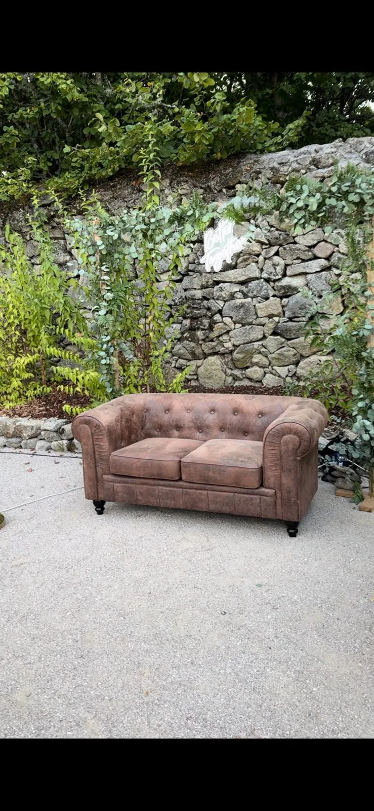

Sofá Chester
Un punto de escena para el photocall.
El sofá Chester da presencia al montaje, invita a posar de otra forma y ayuda a que las fotos parezcan menos improvisadas y más cuidadas.
Extra
Más contexto, más comodidad y fotos con otro ritmo.
- Ideal para photocall de bodas, comuniones, cumpleaños y eventos de empresa.
- Funciona muy bien combinado con jardín vertical, muro floral o neones.
- Aporta una zona visual donde los invitados pueden sentarse, posar y repetir foto.
- Lo coordinamos con el montaje principal para que no sea un elemento suelto.

60€
Extra de sofá Chester para completar el montaje de photocall.